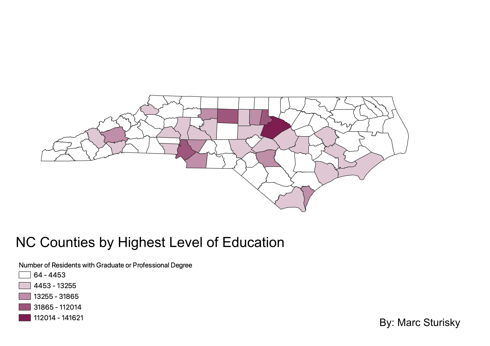

Homework 6: Census data choropleth

The map above is analyzing census data related to education of every North Carolina county. The map compares county data of number of residents with a graduate or professional degree. As seen on the map due to having the darkest shade of purple, Wake County has the most residents with a graduate or professional degree. On the other end, the countries that are white on the map have the smallest numbers of residents with a graduate degree. I used EPSG: 2264 which is NAD83 / North Carolina (ftUS).
Data used for this project:
Link to geoJSON on Github
Link to cleaned csv dataset on Github